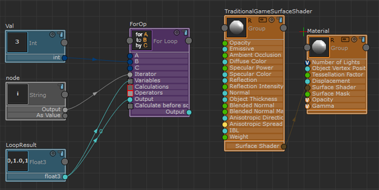
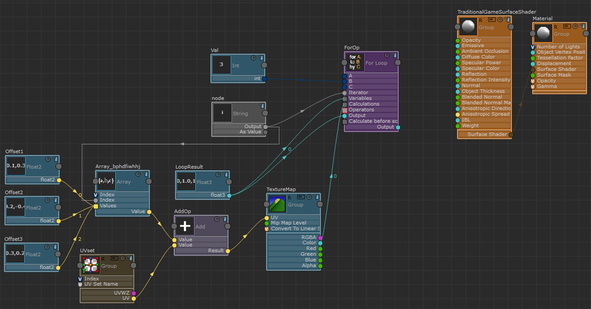
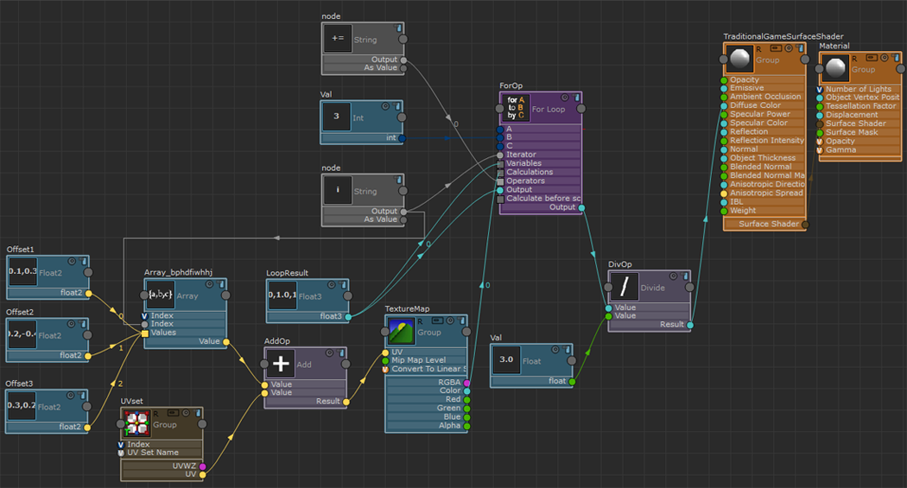
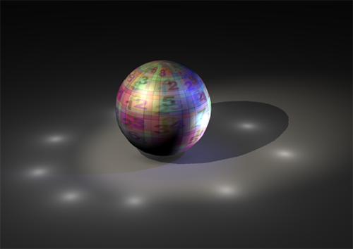

使用“自定义代码”(Custom Code)节点
可以使用不同的方式创建“For 循环”(For Loop)。可以创建“自定义代码”(Custom Code)节点。从 ShaderFX 菜单栏中选择“设置 > 切换高级模式”(Settings > Toggle Advanced Mode)以进入高级模式，然后选择“硬件着色器节点 > 各种 > 自定义代码”(Hw Shader Nodes > Various > Custom Code)。按“属性编辑器”(Attribute Editor)中的“编辑”(Edit)，在显示的“自定义代码”(Custom Code)编辑器中输入您的代码。如果打算使用两种模式，请使用在 DirectX 和 OpenGL 中运行的函数。
使用“For 循环”(For Loop)节点
要创建“For 循环”(For Loop)节点，您还必须使用高级模式。
以下示例说明如何使用“For 循环”(For Loop)通过不同的 UV 偏移采样纹理三次。将采样值相加，然后除以三，所得平均值应用到 TraditionalGameSurfaceShader 的“漫反射”(Diffuse Color)通道。
设置 for 循环
- 选择“硬件着色器节点 > 流控制 > For 循环”(Hw Shader Nodes > Flow Control > For Loop)以创建“For 循环”(For Loop)节点。
提示： 方形端口表示其可以接受多个输入。
- 选择“硬件着色器节点 > 值 > 整数”(Hw Shader Nodes > Values > Int)创建一个整数节点。在“属性编辑器”(Attribute Editor)中将其值设置为 3，并将其连接到“For 循环”(For Loop)节点的“B”属性。
- “A”属性表示循环的开始。
- “B”属性表示循环的结束。
- “C”属性表示循环的间隔。
默认情况下，“A”的值为 0，“C”的值为 1。如果为循环使用这些默认值，则无需连接这些属性。
在此示例中，我们设置 for i = 0, I<3, i++；因此，不需要明确设置“A”和“C”的值。
- 选择“硬件着色器节点 > 各种 > 字符串”(Hw Shader Nodes > Various > String)来创建一个迭代器。在其“属性编辑器”(Attribute Editor)中，从“默认选项”(Default options)下拉列表中选择“i”，并将其连接到“For 循环”(For Loop)节点的“迭代器”(Iterator)属性。
- 选择“硬件着色器节点 > 值 > 浮点 3”(Hw Shader Nodes > Values > Float 3)创建一个变量，用于存储循环中计算的值。
提示： 使用“浮点 3”(Float3)或“浮点 4”(Float4)存储这些值。请勿使用“颜色”(Color)。
- 在“浮点 3”(Float3)“属性编辑器”(Attribute Editor)中，将该节点重命名为“循环结果”(Loop Result)并将值初始化为 1。
- 将“浮点 3”(float3)属性连接到“For 循环”(For Loop)节点的“变量”(Variables)属性。由于这是一个简单的循环，仅使用一个变量，因此也会将“浮点 3”(float3)连接到“For 循环”(For Loop)的“输出”(Output)属性。

设置纹理采样
- 选择“硬件着色器节点 > 纹理 > 纹理贴图”(Hw Shader Nodes > Textures > Texture Map)创建“纹理贴图”(Texture Map)节点。将纹理连接到“属性编辑器”(Attribute Editor)中的“MyTexture/Path”属性。
- 选择“硬件着色器 > 值 > 数组”(Hw Shader Nodes > Values > Array)以创建“数组”(Array)节点。在数组中存储了三组偏移值。
- 选择“硬件着色器节点 > 值 > 浮点 2”(Hw Shader Nodes > Values > Float 2)三次，以为三组偏移值创建三个“浮点 2”(Float 2)节点。对于每个“浮点 2”(Float 2)节点，在“属性编辑器”(Attribute Editor)中设置其属性，如下：
- “名称”(Name)：Offset1，“X”：0.1，“Y”：0.3
- “名称”(Name)：Offset2，“X”：0.2，“Y”：-0.4
- “名称”(Name)：Offset3，“X”：0.3，“Y”：0.2
- 将所有三个“浮点 2”(Float 2)节点连接到“数组”(Array)节点的“值”(Values)属性。
- 选择“纹理贴图”(Texture Map)节点。在其“属性编辑器”(Attribute Editor)中，确保“采样器/U 坐标”(Sampler / U Coordinate)和“采样/V 坐标”(Sampling / V Coordinate)属性设置为“包裹”(WRAP)。
由于纹理通过偏移进行采样，因此采样可能会超出 0 到 1 的 UV 范围。将该属性设置为“包裹”(WRAP)可确保在 UV 范围超过 1.0 时像素从纹理开头开始采样。
- 选择“硬件着色器节点 > 输入公用 > UV 集”(Hw Shader Nodes > Inputs Common > UV Set)和“硬件着色器节点 > 数学 > 相加”(Hw Shader Nodes > Math > Add)，以分别创建“UV 集”(UV Set)节点和“相加”(Add)节点。
- 连接节点，如下所示：
- 将“数组”(Array)的“值”(Value)属性连接到“相加”(Add)的“值”(Value)属性。
- 将“UV 集”(UV set)节点的“UV”属性连接到“相加”(Add)的其他“值”(Value)属性。
- 将“相加”(Add)的“结果”(Result)属性连接到“纹理贴图”(Texture Map)的“UV”属性。
- 将迭代器（“字符串”(String)节点）的“输出”(Output)属性连接到“数组”(Array)的“索引”(Index)属性。这样，“For 循环”(For Loop)可获取偏移值。
- 将“纹理贴图”(Texture Map)的“颜色”(Color)属性连接到“For 循环”(For Loop)的“计算”(Calculations)属性。这样可在 for 循环中设置计算，该循环要对纹理贴图采样三次。

计算平均采样结果
- 选择“硬件着色器节点 > 各种 > 字符串”(Hw Shader Nodes > Various > String)创建“字符串”(String)节点，然后从“默认选项”(Default options)下拉列表中选择“+=”。
- 将“字符串”(String)的“输出”(Output)值连接到“For 循环”(For Loop)节点的“运算符”(Operators)属性。“For 循环”(For Loop)会将纹理采样的结果添加到“循环结果”(Loop Result)变量中。
- 选择“硬件着色器节点 > 数学 > 相除”(Hw Shader Nodes > Math > Divide)创建“相除”(Divide)节点。将“For 循环”(For Loop)的“输出”(Output)属性连接到“相除”(Divide)的第一个“值”(Value)属性。由于“循环结果”(Loop Result)是三个采样值的总和，因此必须除以三才能获得其平均值。
- 选择“硬件着色器节点 > 值 > 浮点”(Hw Shader Nodes > Values > Float)创建“浮点”(Float)节点，并在“属性编辑器”(Attribute Editor)中将其值设置为 3。将其“浮点”(Float)属性连接到“相除”(Divide)的其他“值”(Value)属性，将采样结果的总和除以三。
- 将“相除”(Divide)的“结果”(Result)属性连接到 TraditionalGamesSurfaceShader 的“漫反射颜色”(Diffuse Color)属性。


可以将“ShaderFX”材质导出到着色器文件并检查着色器代码，以查看刚创建的 for 循环：
float3 LoopResult = float3(1.0, 1.0, 1.0);
for(int i=0; i<3; i+=1)
{
float2 AddOp = (Array_bphdfiwhhj[i] + IN.map1.xy);
float4 Sampler = numberTestTexture.Sample(MMMLWWWSampler, AddOp);
LoopResult += Sampler.xyz;
}
有关导出到着色器文件的更多信息，请参见将 ShaderFX 材质导出到 HLSL、CgFX 和 GLSL。